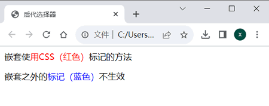

首页 > 编程笔记
CSS后代选择器用法详解
在 CSS 选择器中，还可以通过嵌套的方式对特殊位置的 HTML 标记进行声明，例如当 <p> 标记中包含 <span> 标记时，就可以使用后代选择器进行相应的控制。
后代选择器的写法就是把外层的标记写在前面，内层的标记写在后面，之间用空格进行分隔。当标记发生嵌套时，内层的标记就成了外层标记的后代。
例如下面的代码：
下面举一个完整的实例：
后代选择器的使用非常广泛，不仅标记选择器能以这种方式组合，类别选择器和 ID 选择器也都能以这种方式进行嵌套。下面是一些典型的语句。
例如一个 <ul> 标记中包含多个 <li> 标记，而需要对其中某个 <li> 标记单独设置 CSS 样式时，才赋予该 <li> 标记一个单独 ID 或者类别，而其他 <li> 标记依旧采用“ul li{…}”的嵌套方式来设置。
需要注意的是，后代选择器产生的影响不仅限于元素的“直接后代”，还会波及它的“各级后代”。
例如，有如下的 HTML 结构。
在 CSS2.0 中，规则的制定者还规定了一种复合选择器，即“子选择器”，也就是只对直接后代有影响的选择器，但其对“孙子”及多个层的后代则不会产生作用。
子选择器和后代选择器的语法区别是子选择器使用大于号（>）连接。例如，将上面的 CSS 设置为如下形式。
还有一种比较特殊的选择器被称为“通配选择器”，它会选中所有元素，会和其他选择器组合在一起使用。例如选中某个元素的所有后代元素，代码如下。
后代选择器的写法就是把外层的标记写在前面，内层的标记写在后面，之间用空格进行分隔。当标记发生嵌套时，内层的标记就成了外层标记的后代。
例如下面的代码：
<p>这是最外层的文字，<span>这是中间层的文字，<b>这是最内层的文字，</b></span></p>最外层是 <p> 标记，里面嵌套了 <span> 标记，<span> 标记中又嵌套了 <b> 标记，则可以称 <span> 是 <p> 的子元素，<b> 是 <span> 的子元素。
下面举一个完整的实例：
<html>
<head>
<title>后代选择器</title>
<style type="text/css">
p span {
color: red;
}
span {
color: blue;
}
</style>
</head>
<body>
<p>嵌套使<span>用CSS（红色）</span>标记的方法</p>
嵌套之外的<span>标记（蓝色）</span>不生效
</body>
</html>
如果将 span 选择器嵌套在 p 选择器中进行声明，则显示效果只适用于 <p> 标记之间的 <span> 标记，而其外的 <span> 标记并不会产生任何效果，如下图所示，只有第 1 行中的 <span> 标记之间的文字变成了红色，而第 2 行中 <span> 标记之间的文字则是按照第 2 条 CSS 样式规则设置的颜色（即蓝色）。

图 1 后代选择器
图 1 后代选择器
后代选择器的使用非常广泛，不仅标记选择器能以这种方式组合，类别选择器和 ID 选择器也都能以这种方式进行嵌套。下面是一些典型的语句。
.special i{ color: red; } /* 使用了属性special的标记里面包含的<i> */
#one li{ padding-left:5px; } /* ID为one的标记里面包含的<li> */
td.out .inside strong{ font-size: 16px; } /* 多层嵌套，同样适用 */
上面的第 3 条语句使用了 3 层嵌套，实际上更多层的嵌套在语法上也是被允许的。上面的这个 3 层嵌套表示的就是使用了 .out 类别的 <td> 标记中所包含的 .inside 类别的标记，同时也使用了 <strong> 标记。一种可能的与其相对应的 HTML 如下。
<td class="out">
<p class="inside">
其他内容<strong>CSS控制的部分</strong>其他内容
</p>
</td>
选择器的嵌套在 CSS 的编写中可以大大减少程序中对类别和 ID 的声明。因此在构建页面 HTML 框架时通常只给外层标记（父标记）定义类别或者 ID，内层标记（子标记）能通过嵌套进行表示的则利用嵌套的方式，而不需要再定义新的类别或者专用 ID。只有当内层标记无法利用此规则时，才进行单独声明。例如一个 <ul> 标记中包含多个 <li> 标记，而需要对其中某个 <li> 标记单独设置 CSS 样式时，才赋予该 <li> 标记一个单独 ID 或者类别，而其他 <li> 标记依旧采用“ul li{…}”的嵌套方式来设置。
需要注意的是，后代选择器产生的影响不仅限于元素的“直接后代”，还会波及它的“各级后代”。
例如，有如下的 HTML 结构。
<p>这是最外层的文字，<span>这是中间层的文字，<b>这是最内层的文字，</b></span></p>如果设置了如下 CSS 样式。
p b{
color:blue;
}
那么“这是最外层的文字”和“这是中间层的文字”这些字将以黑色显示，即没有对其设置样式的颜色。后面的“这是最内层的文字”会变成蓝色。在 CSS2.0 中，规则的制定者还规定了一种复合选择器，即“子选择器”，也就是只对直接后代有影响的选择器，但其对“孙子”及多个层的后代则不会产生作用。
子选择器和后代选择器的语法区别是子选择器使用大于号（>）连接。例如，将上面的 CSS 设置为如下形式。
p>b{
color:blue;
}
结果是没有文字变为蓝色，因为 p>b 找的是 p 的直接后代 b，p 下面的直接后代只有一个 span，或者叫作“儿子”，而 b 是 p 的“孙子”，因此不在选中的范围内。还有一种比较特殊的选择器被称为“通配选择器”，它会选中所有元素，会和其他选择器组合在一起使用。例如选中某个元素的所有后代元素，代码如下。
p.header > *{
color:blue;
}
上述代码对类别为 header 的段落的所有子元素的样式进行了设置。关注公众号「站长严长生」，在手机上阅读所有教程，随时随地都能学习。内含一款搜索神器，免费下载全网书籍和视频。

微信扫码关注公众号